O perfil pensado como uma linha só, para que nariz, lábios e queixo conversem entre si. Parte do Método RF.
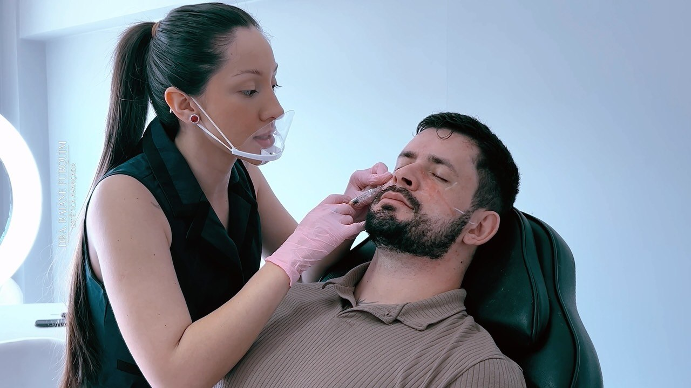
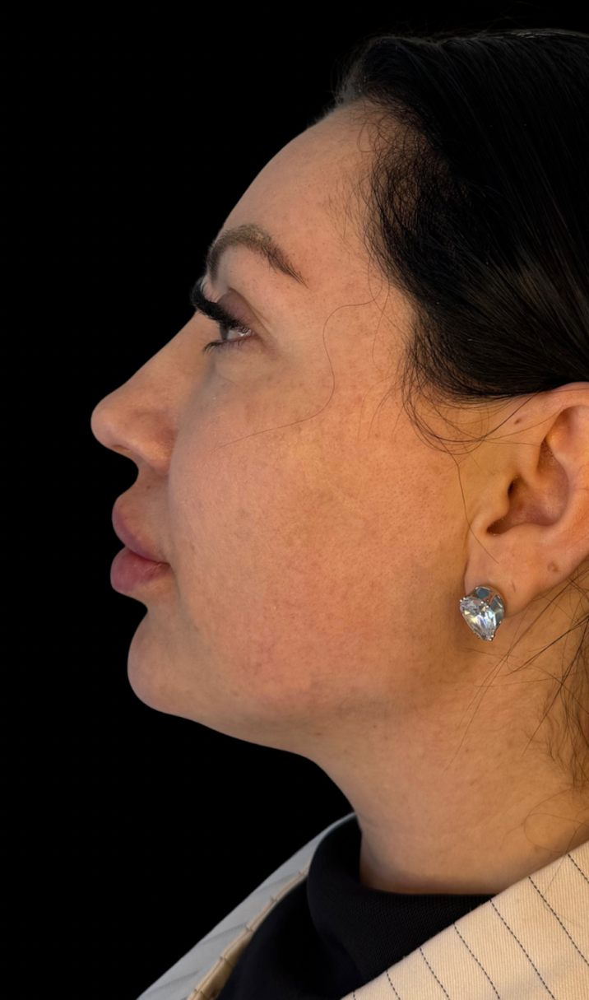
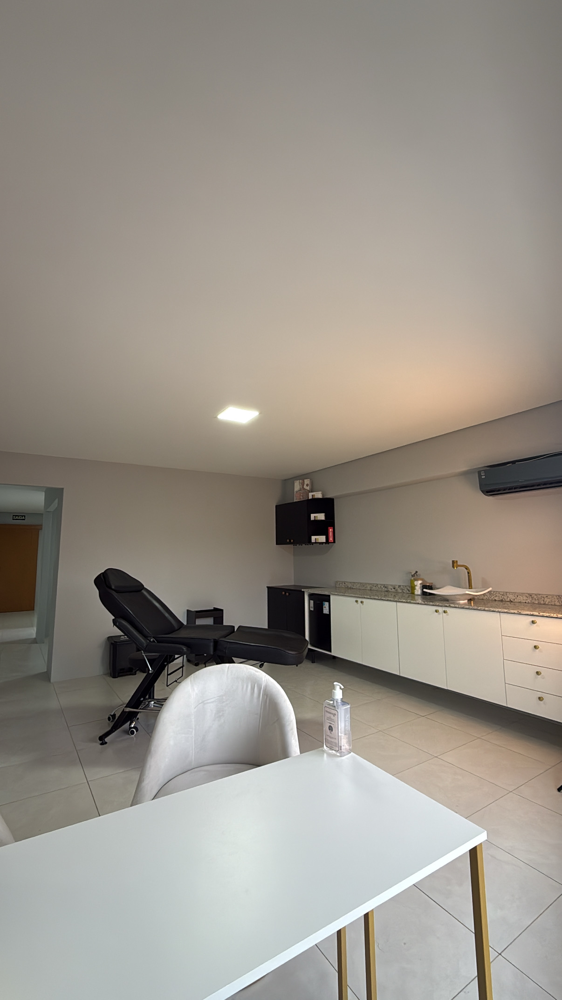
Clínica de Estética Avançada · Guarapuava, PR
Harmonização facial e perfiloplastia com a Dra. Raiane Furquim
5,0 no Google · 25 avaliaçõesCriadora do Método RFAv. Manoel Ribas, 4095
Olá, eu sou aDra. RaianeFurquim
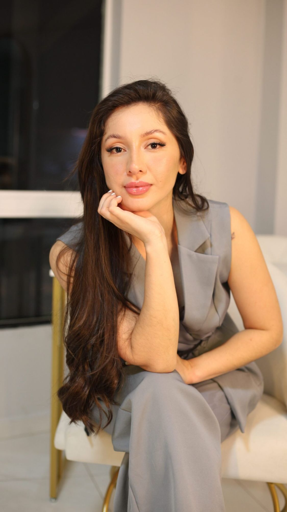
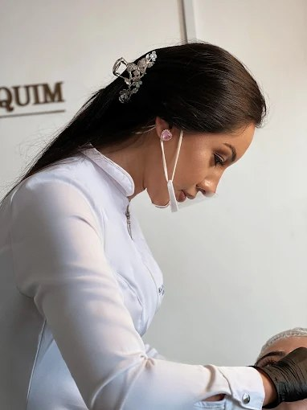
Criadora do Método RF, harmonização facial e perfiloplastia
“Quando eu olho para a minha profissão, eu nunca vejo apenas procedimentos, técnica ou estética. Eu vejo histórias.” Vejo mulheres que voltam a se enxergar com mais amor, e por isso cada atendimento começa com uma avaliação cuidadosa, sem pressa.
Agendar com a Dra.
5,0 no Google
25 avaliações
Método RF
Avaliação individual
Guarapuava PR
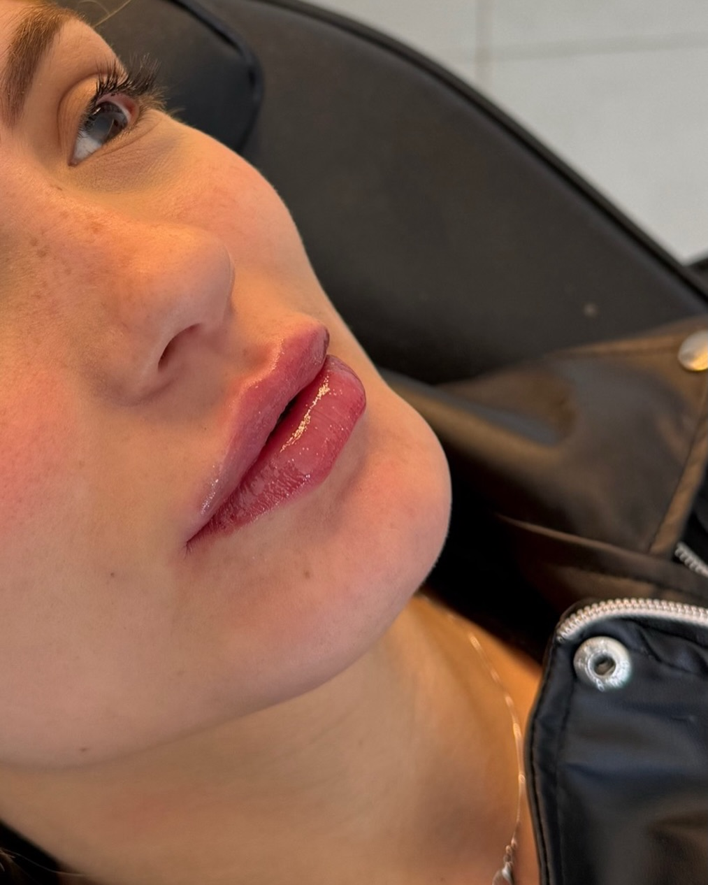
Talvez você se identifique
Há quanto tempovocê foge das fotosque mostram oseu perfil?
Muitas vezes, o que incomoda não é exatamente a região que precisa ser tratada.Por isso tudo começa com uma avaliação do rosto como um todo. Nariz, lábios e queixo conversando entre si, para um resultado que respeita quem você é.
Quero minha avaliaçãoCada protocolo nasce da avaliação, nunca de uma receita pronta
Tratamentos
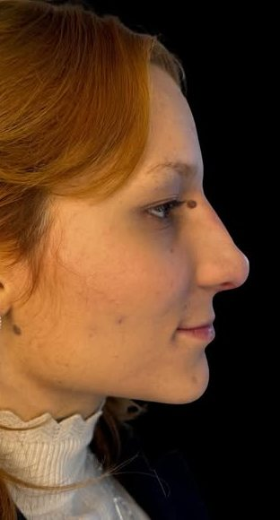
Um nariz mais harmônico, desenhado para respeitar as proporções do seu rosto.
Rinomodelação
Nariz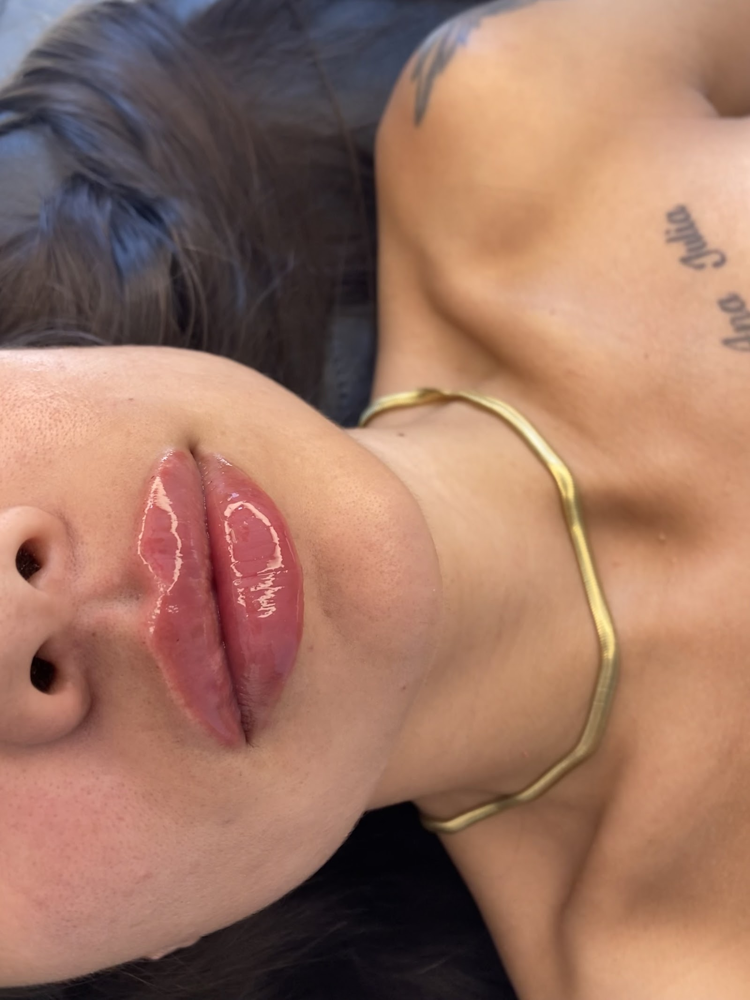
Contorno e volume na medida certa, sem excessos e respeitando o formato natural dos lábios.
Preenchimento labial
Lábios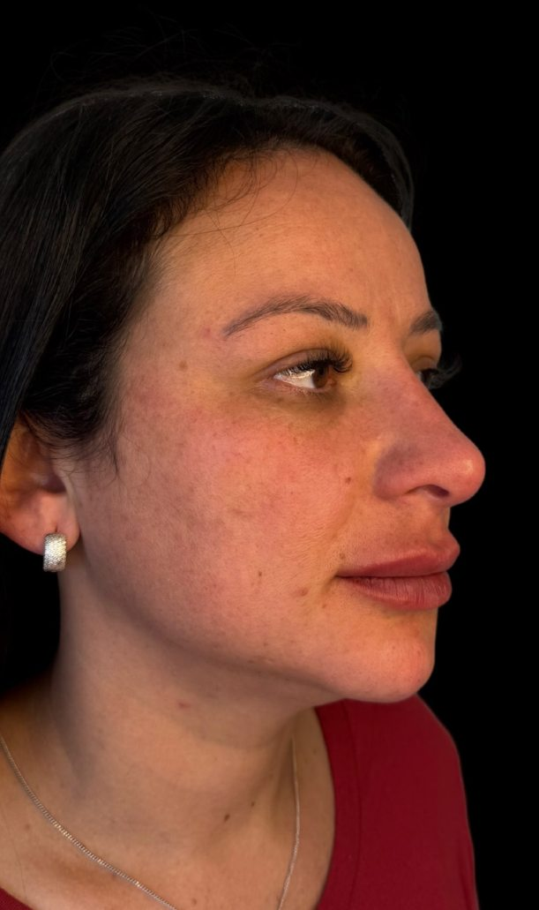
Personalizado para você, respeitando seus traços, suas proporções e o resultado que deseja alcançar.
Full Face
Rosto inteiro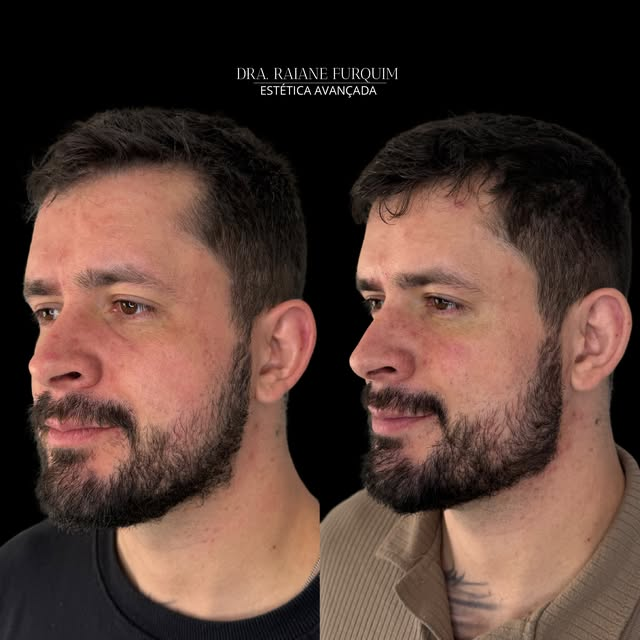
Mais definição ao contorno facial e harmonia entre as estruturas do rosto, sem perder a naturalidade.
Harmonização masculina
Contorno
Cada indicação é definida na avaliação, de forma individual.
Qual é o meu caso?
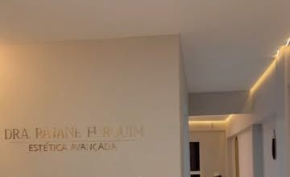
Os Resultados
Arraste para comparar. Casos reais publicados pela clínica.
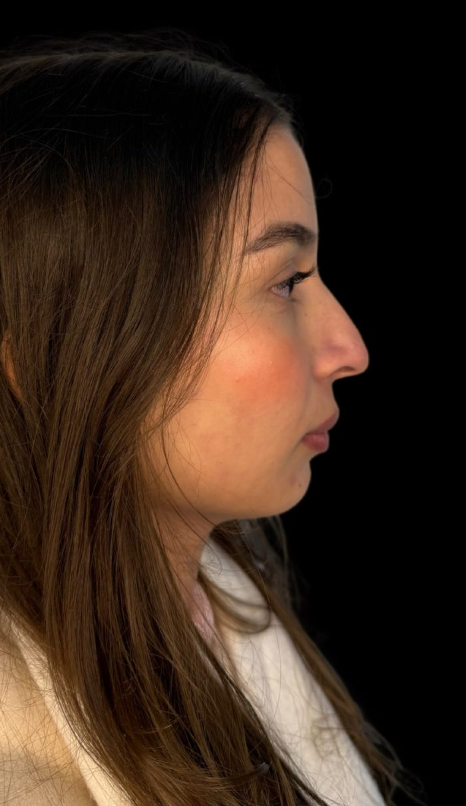
Ver mais casos
Resultados podem variar de pessoa para pessoa.
O que dizem as pacientes
5,0 no Google · 25 avaliações“Eu tinha um nódulo no lábio causado por um preenchimento antigo, e ela foi a única profissional que conseguiu resolver. Com muita delicadeza e técnica, ela deixou meu lábio perfeito.”
“A Dra. é super atenciosa, cuidadosa e muito profissional. Me senti acolhida e muito segura durante todo o procedimento.”
“Atendimento incrível! Profissional me atendeu com muita destreza, comprometimento e responsabilidade. Amei, dra.”
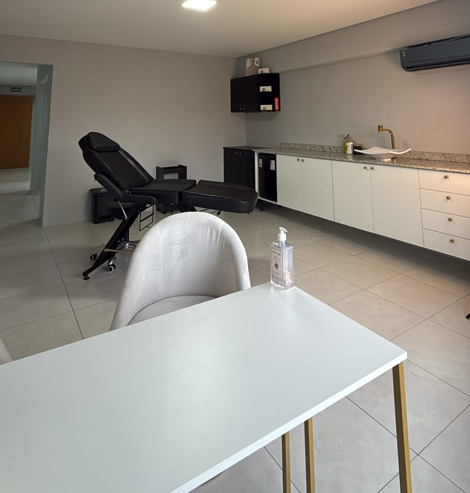
Como a Dra. Raiane trabalha
O rosto como um todo
O que incomoda nem sempre é a região que precisa ser tratada.
Sem receita pronta
Cada ponto é planejado para a sua anatomia e as suas características.
Naturalidade
Realçar o que já é bonito em você, sem transformar quem você é.
Segurança e técnica
Foco na segurança, na técnica e na naturalidade dos resultados.
Dúvidasfrequentes
O que ficar de fora, a Dra. Raiane conversa com você na avaliação.
Perguntar no WhatsAppÉ o primeiro passo de tudo. A Dra. Raiane olha o seu rosto como um todo, entende o que te incomoda e explica com calma o que faz sentido para você. Só depois disso existe uma indicação.
Naturalidade é o ponto de partida. A proposta é realçar o que já é bonito em você, respeitando proporções, traços e a sua identidade. Cada resultado depende da anatomia de cada pessoa.
É um olhar para o perfil como uma linha só, em que nariz, lábios e queixo conversam entre si. Faz parte do Método RF, criado pela Dra. Raiane. Se ela é indicada para você, só a avaliação responde.
Depende do procedimento, do produto utilizado e de como o seu organismo responde. Essa conversa acontece na avaliação, de forma individual e transparente.
Varia de acordo com o procedimento e com cada pessoa. Você recebe orientações claras sobre os cuidados antes e depois, e pode tirar dúvidas pelo WhatsApp da clínica.
Pelo WhatsApp da clínica ou pelo telefone (42) 99869-9343. O atendimento acontece na Av. Manoel Ribas, 4095, Conradinho, Guarapuava, PR.
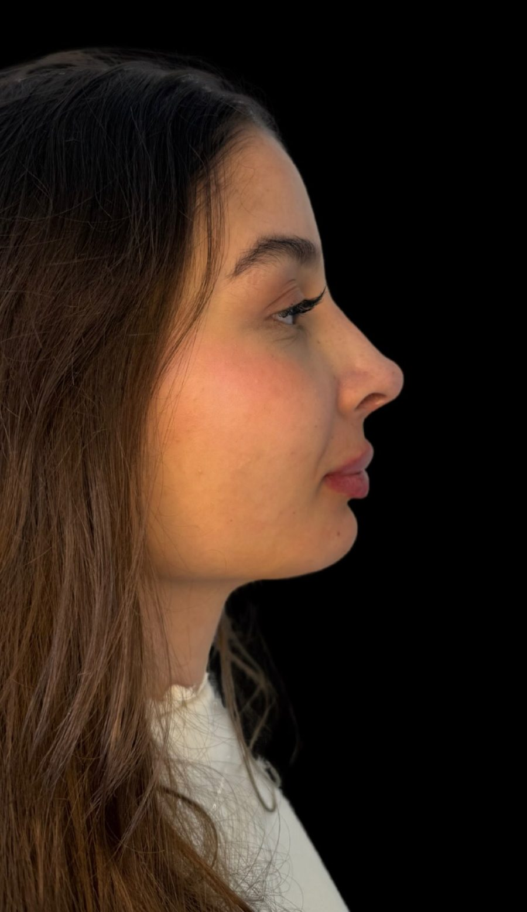
Conquiste operfil dos sonhos
Se você também deseja, agende a sua avaliação. É o primeiro passo, e é feito pelo WhatsApp.